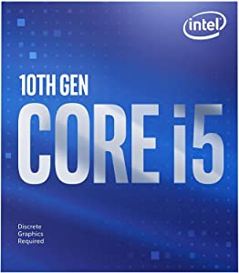
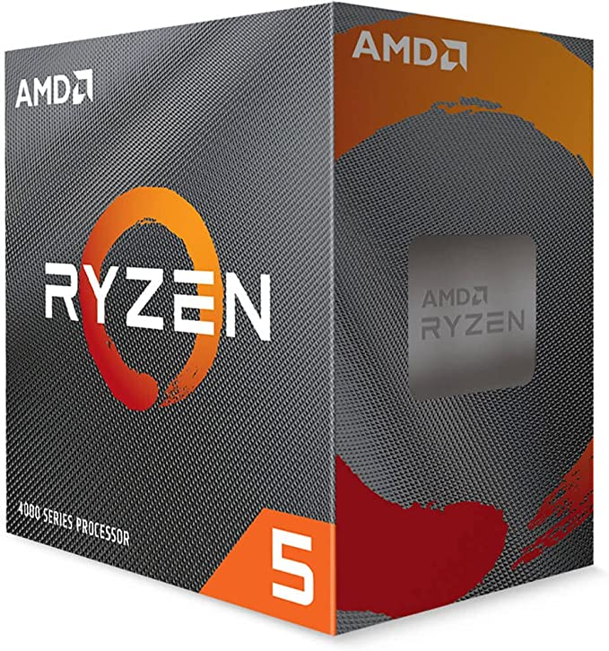
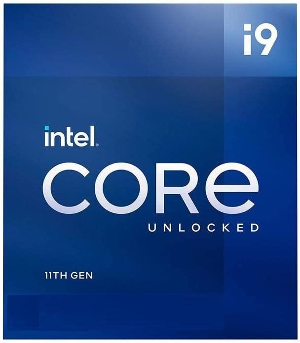

Processadores
O processador é a unidade central de processamento de um computador (CPU), que funciona como o cérebro do computador, pois interage e faz as conexões necessárias entre todos os programas instalados.
Informações principais
- Núcleo: O núcleo é um dos termos mais utilizados sobre o funcionamento de um processador, pois ele é o que permite trabalhar com vários dados recebidos simultaneamente.
- Clock: Outro termo comum é o clock ou velocidade do clock do processador. Ele é um dos fatores relacionados à velocidade de processamento das informações e é medido em GigaHertz (GHz).
- Memória cache: Não tem como falar em processador sem citar a memória cache, que é uma grande aliada no processamento. Essa parte importante é responsável por guardar algumas das informações essenciais para o funcionamento do componente.
- Compatibilidade: Outro critério na escolha do seu processador é saber se ele é compatível com a placa-mãe presente em seu computador. É muito importante que exista compatibilidade entre os dois componentes, já que o processador é um pequeno chip que pode ser encaixado na placa-mãe ou conectado por meio de um soquete.
Intel PROCESSADOR CORE I5-10400F 2.9GHZ CACHE 12MB 6 NUCLEOS 12 THREADS 10ª GERACAO LGA 1200 BX8070110400F R$775,00
Á vista
Em até 10x R$ 77,50 sem juros
AMD Ryzen 5 4500 6 núcleos, processador de desktop desbloqueado de 12 fios com refrigerador Wraith Stealth, Cerâmica cinza R$630,00
Á vista
Em até 10x R$ 63,00 sem juros
PROCESSOR INTEL CORE I9-11900K 3.50GHZ (TURBO 5.3GHZ) 16MB CACHE, 8 NUCLEOS 16 THREADS FCLGA1200 BX8070811900K – INTEL R$2.740,16
Á vista
Em até 10x R$ 274,07 sem juros